로그인
-
1
관리자 페이지 주소로 접속합니다 — /admin
-
2
이메일과 비밀번호를 입력하고 로그인을 누릅니다.
-
3
로그인 후 화면 오른쪽 위에 세션(총 1시간) 만료까지 남은 시간이 실시간으로 표시됩니다.
세션 만료 5분 전 화면 상단에 안내 배너가 뜨며, 연장 버튼을 클릭시 세션이 연장됩니다.

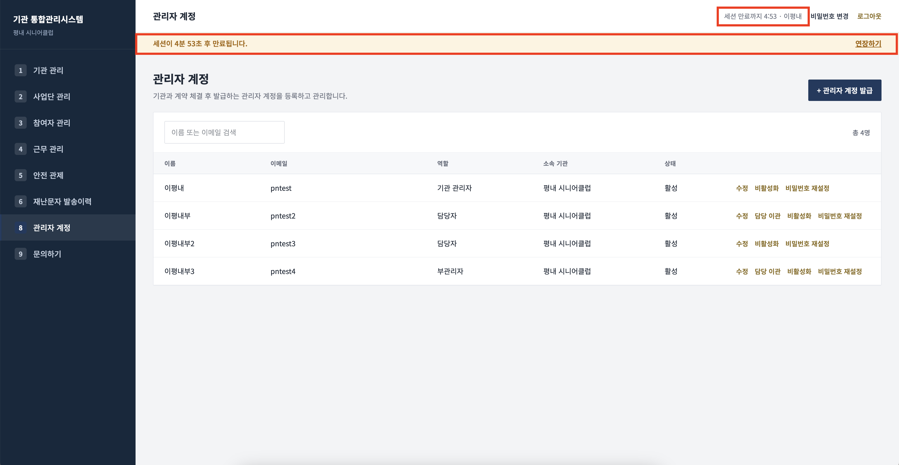
비밀번호는 상단 바의 비밀번호 변경 버튼으로 언제든 바꿀 수 있습니다. 현재 비밀번호와 새 비밀번호(8자 이상)·확인을 입력해야 합니다.
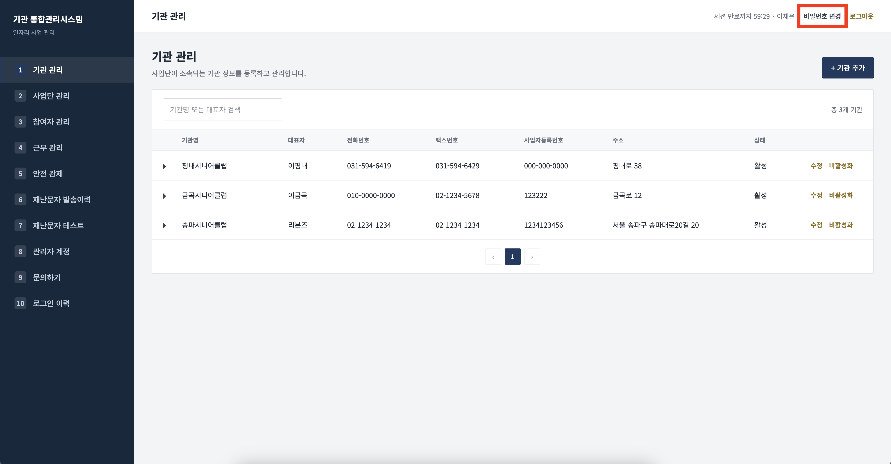
기관 관리
기관명, 대표자, 전화번호, 팩스번호, 사업자등록번호, 주소, 운영 상태를 한 화면에서 확인합니다. 대부분의 경우 계약 시 서비스 운영팀이 기관 정보를 먼저 등록해 두므로, 기관 관리자는 정보가 정확한지 확인하고 변경 사항이 있을 때 수정하면 됩니다.
-
1
기관의 소속 직원 / 사업단 목록 / 수요처 목록을 확인할 수 있습니다.
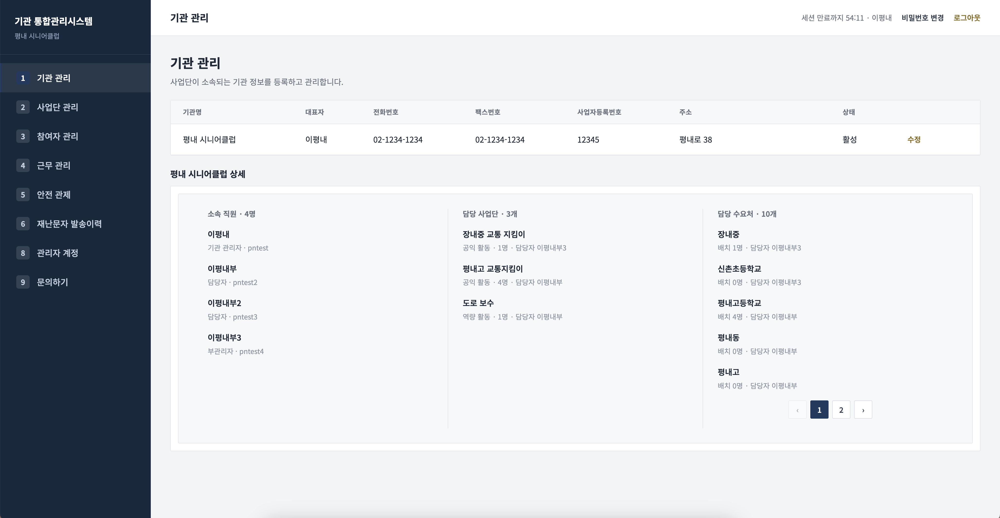
사업단 관리
-
1
오른쪽 위 + 사업단 추가 → 기관 선택, 담당자, 사업 유형, 사업단명, 시작일·종료일, 시작·종료 시간, 시급을 입력합니다.
-
2
목록에서 사업단명을 눌러 사업단 상세로 들어가면 4개 탭이 있습니다.
사업단 운영 시간은 실제 근무 시간에 영향을 미치지 않습니다.
역량 활동의 경우 4대 보험을 설정할 수 있습니다.
보조 담당자(선택)는 수요처 담당자로 지정할 수 있는 사람을 한 명 더 추가하는 항목입니다. 사업단 담당자와
수요처 담당자를 다르게 지정해야 하는 경우, 그 사람을 보조 담당자로 추가해 두세요.
담당자·부관리자 권한으로 로그인한 계정은 자신이 담당자 또는 보조 담당자로 지정된 사업단만 수정·비활성화하거나 상세 페이지에 들어갈 수 있습니다.
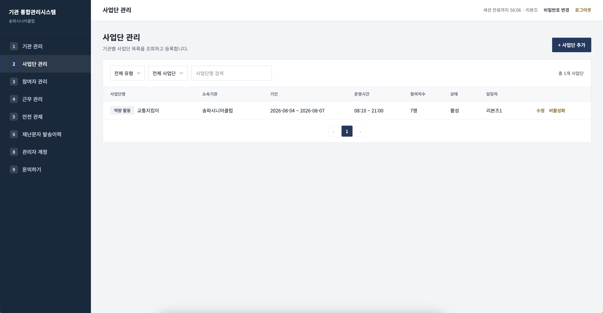
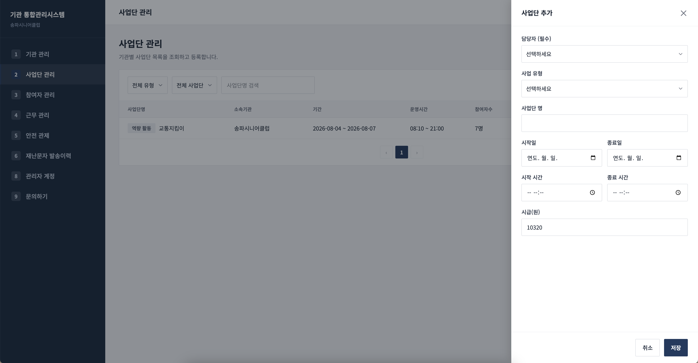
사업단 상세 — 4개 탭
| 탭 | 용도 |
|---|---|
| 수요처 관리 | 참여자가 실제 근무하는 장소(수요처)를 등록·관리합니다. 수요처별 담당자, 배정된 조, 근무시간, 활성 상태를 지정합니다. |
| 조 관리 | 오전/오후 등 근무 조를 만들고 조별 근무시간·인원을 관리합니다. 수요처에 조를 배정하면, 그 조 소속 참여자는 자동으로 해당 근무시간을 따릅니다. |
| 참여자 명단 | 이 사업단에 참여 중인 인원을 조회·검색하고, 휴무·연차·개인 스케줄·참여종료·삭제를 처리합니다. |
| 양식 출력 | 월을 선택해 활동 대장, 활동비 지급 대장을 엑셀로 내려받습니다. |
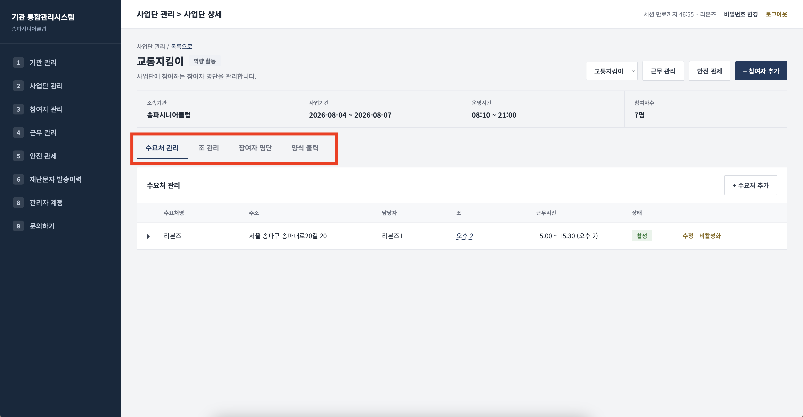
-
3
+ 수요처 추가 버튼을 누르면 수요처에 대한 정보를 추가할 수 있습니다. 수요처명, 주소명, 반경을 입력한 후 기본 관제 옵션을 체크하시면 원형 관제 구역이 추가됩니다. 기본 관제 형태는 원형으로 설정되어 있으나, 다각형 관제를 사용하고자 하실 때는 해당 옵션을 해제한 후 저장하시면 됩니다.
-
4
상세 패널에서는 관제구역의 활성화/비활성화 및 삭제가 가능합니다. 주소로 찾기 버튼을 클릭시 수요처의 주소로 지도가 이동합니다.
수요처는 조 배정 이후에 활성화됩니다. 조를 추가하신 후, 수요처에 조를 꼭 배정해주세요.
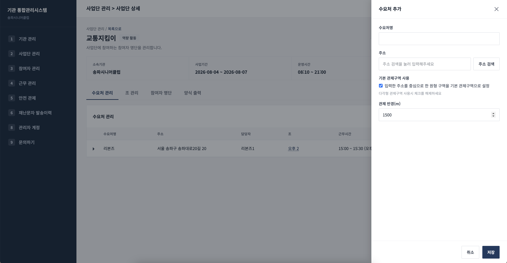
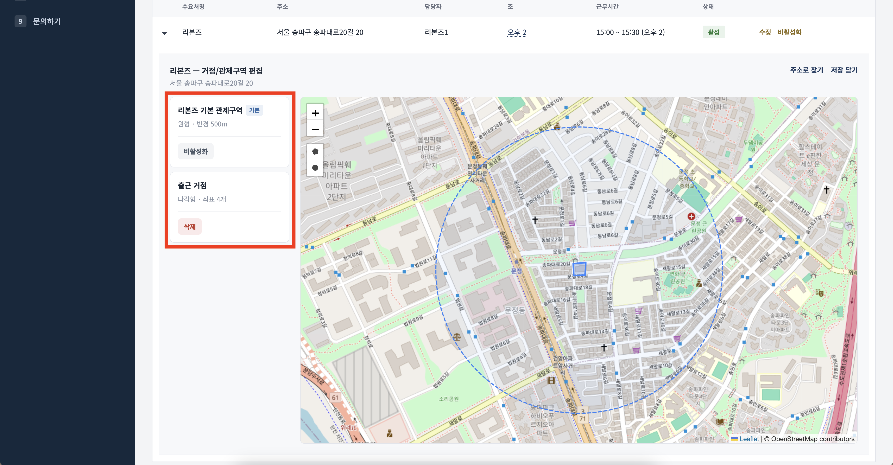
-
5
조 관리 탭에서는 오전/오후 등 근무 조를 만들고 조별 근무시간·인원을 관리합니다.
조를 수요처에 배정하면 그 조 소속 참여자는 자동으로 해당 근무시간을 따르며, 조 배정이 끝나야 수요처가 활성화됩니다. -
6
+조 추가 버튼을 클릭하면 새로운 조를 등록할 수 있습니다. 조 이름, 설명, 근무시간, 월간 근무일을 입력해야 하며, 이때 근무시간은 사업단 운영시간 범위 내에서만 설정이 가능합니다. 월간 근무일은 필수 입력 항목이므로 반드시 입력해 주시기 바랍니다.
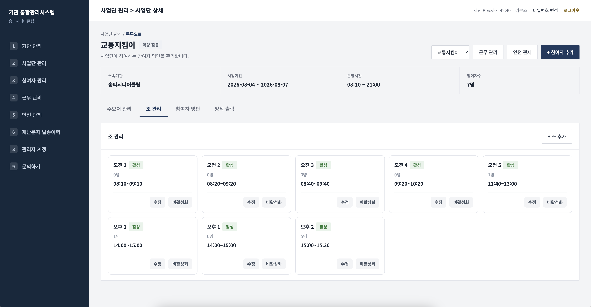
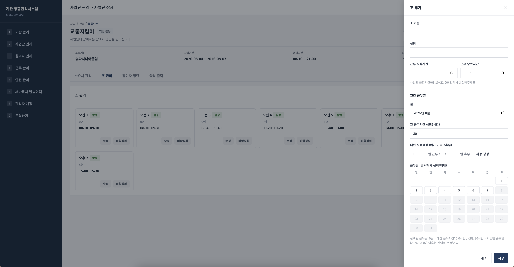
참여자를 조에 배정하려면 먼저 그 조가 수요처에 배정되어 있어야 합니다. 순서: 수요처 등록 → 조 등록 및 수요처 배정 → 참여자 등록 시 수요처·조 선택.
-
7
참여자 관리 탭에서는 이 사업단에 참여 중인 인원을 조회·검색하고, 휴무·연차·개인 스케줄·참여종료·삭제를 처리합니다.
-
8
+ 참여자 추가 버튼을 누르면 엑셀로 일괄 등록과 직접 입력 두 가지 방식으로 참여자를 등록할 수 있습니다.
일괄 등록은 양식을 다운로드해 작성한 후 업로드하고, 직접 입력은 이름·성별·수요처·조를 한 명씩 입력합니다. 두 방식 모두 수요처와 성별은 필수이며, 조는 선택한 수요처에 이미 배정된 조여야 저장됩니다.
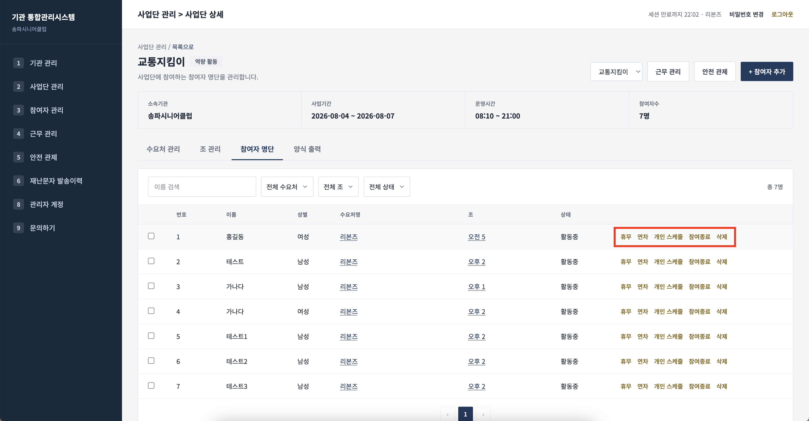
동명이인이 있으면 이름 뒤에 숫자를 붙여 구분해주세요 (예: 홍길동1, 홍길동2). 별도로 자동 처리되지 않으니 등록 시 직접 붙여야 합니다.
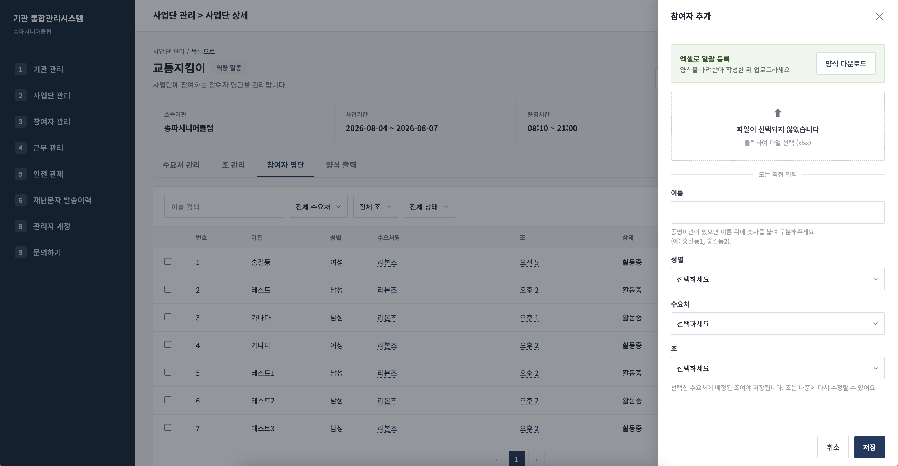
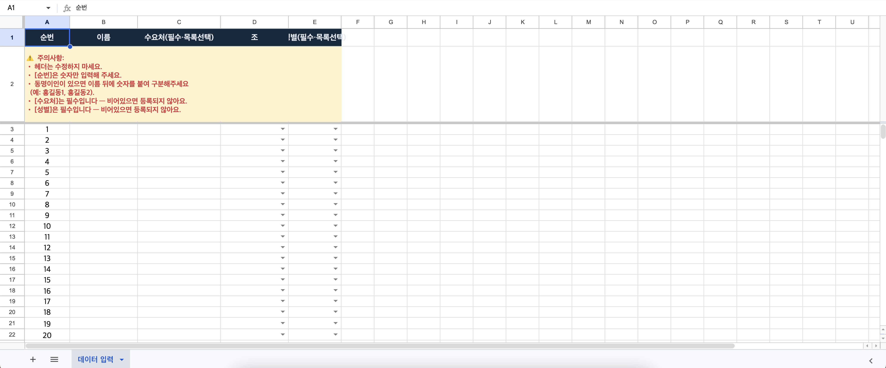
참여자 추가 화면에서는 수요처·조를 새로 만들 수 없습니다. 수요처와 조를 먼저 등록해 두어야 참여자 등록 시 선택할
수 있고, 조는 그 조가 수요처에 배정되어 있어야 선택 가능합니다.
순서: 수요처 등록 → 조 등록 및 수요처 배정 → 참여자 등록 시 수요처·조 선택.
-
9
양식 출력 탭에서는 참여자별 근태·급여 관련 서류를 월 단위 엑셀 파일로 다운받아 사용합니다.
단체는 전체 참여자가 한 시트(표)에 담기고, 개인별은 참여자마다 시트가 따로 생성됩니다.
| 사업 유형 | 양식 | 출력 단위 |
|---|---|---|
| 공익 활동 | 활동 대장 | 개인별 |
| 공익 활동 | 활동비 지급 대장 | 단체 |
| 역량 활동 | 출근부 | 개인별 |
| 역량 활동 | 근무 스케줄 | 개인별 |
| 역량 활동 | 급여대장 | 단체 |
| 역량 활동 | 급여 명세서 | 개인별 |
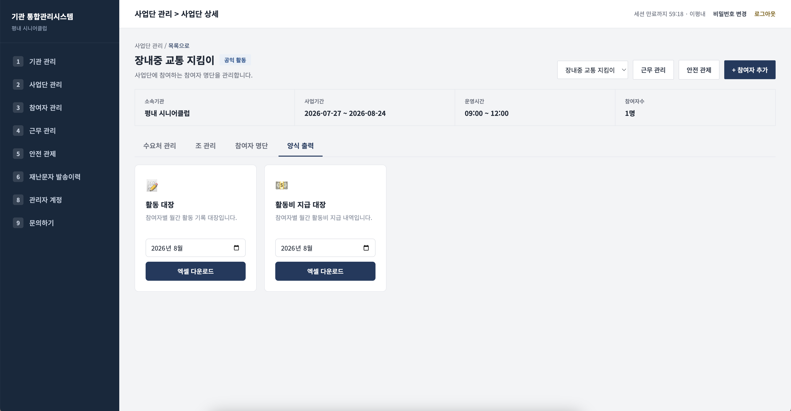
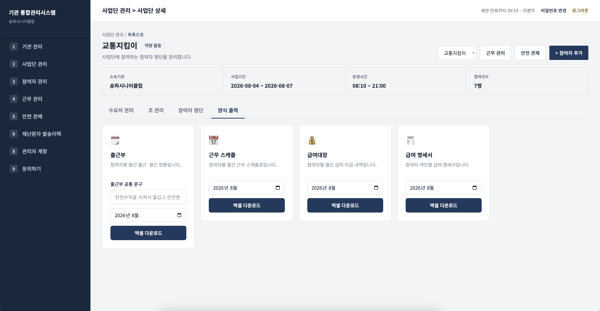
참여자 관리
-
1
유형·사업단·수요처 필터와 이름 또는 수요처명 검색기능을 이용해, 전체 사업단의 참여자를 통합 검색 또는 한눈에 필터링 할 수 있습니다. 목록에는 이름, 성별, 소속기관, 소속 사업단, 수요처명이 표시되며, 행을 클릭하면 참여자 상세로 이동하고 행의 삭제 버튼으로 바로 삭제할 수도 있습니다.
-
2
이름을 누르면 참여자 상세로 이동해 급여 관련 설정·근무 이력·휴가 이력을 확인합니다.
-
3
근무 이력에서는 월을 선택해 근무일별 출근·퇴근 시각, 위치, 관리자 확인(이탈중/처리완료), 근무시간, 상태(정상·지각·조퇴), 사고유무, 서명, 비고를 확인합니다. 상단에는 선택한 달의 정상·지각·조퇴 건수와 총 근무시간이 요약됩니다.
-
4
휴가 이력에서는 연차 총 부여일·사용·잔여를 요약해서 보여주고, 아래 표에서 시작일, 종료일, 구분(유급/무급), 일수, 사유별로 사용 내역을 확인합니다.
-
5
급여 관련 설정에서는 시급(기본값은 사업단 시급), 교육비·치매 검진비(각각 가산/차감/없음 처리)를 설정합니다. 역량 활동 사업단인 경우에는 주휴시간과 4대보험(건강보험·장기요양보험·고용보험·산재보험) 가입 여부도 함께 설정할 수 있습니다. 설정 변경 버튼을 눌러 값을 바꿉니다.
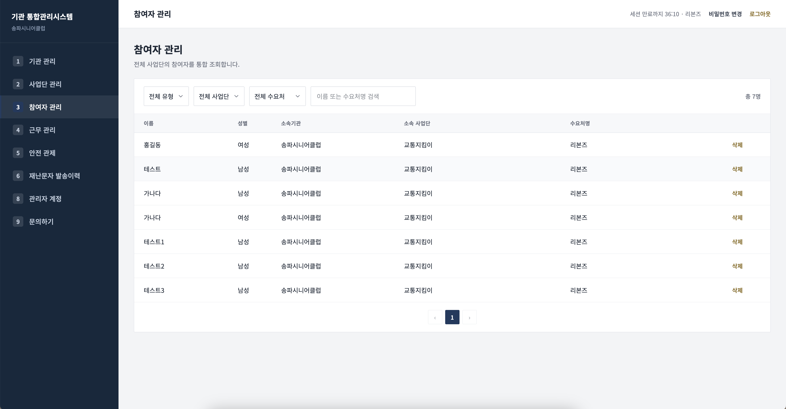
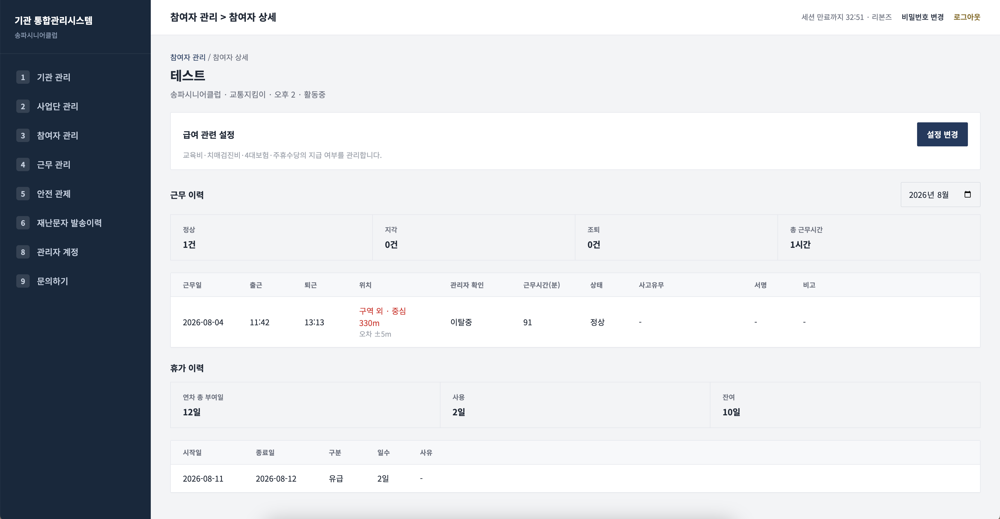
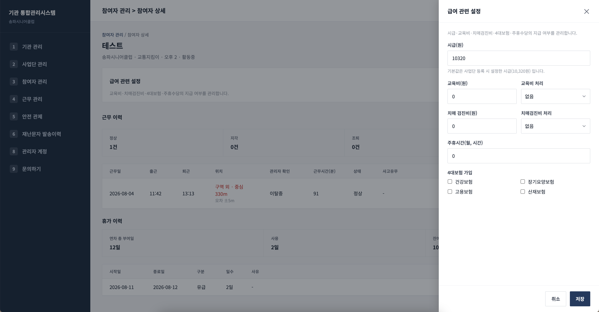
근무 관리
| 탭 | 내용 |
|---|---|
| 근무 | 일자별 출근·퇴근 시각, 근무 위치(등록된 구역 안/밖 및 거리), 근무시간(분), 정상·지각·조퇴 상태를 확인합니다. 개별 기록은 수정, 잘못 찍힌 기록은 무효화할 수 있습니다. |
| 교육 | 필수/선택 교육을 등록하고(교육 정의), 참여자별 이수 현황·필수교육 이행 현황을 확인합니다. |
| 휴가 현황 | 이달의 휴가 건수, 유급/무급 구분, 총 휴가일수와 참여자별 휴가 이력을 확인합니다. |
-
1
근무 탭에서는 사업단 참여자 전원의 일자별 근무 기록을 확인합니다. 출근 시각이 근무 시작 시각보다 15분 이상 늦으면 확인필요 배지가 뜨고, 관리자가 수정을 저장하면 확인 완료로 바뀝니다.
-
2
교육 탭 안에는 교육 정의(등록된 교육 목록), 이수 현황(참여자별 이수 기록), 필수교육 현황(필수 교육을 아직 못 마친 참여자) 3개 하위 탭이 있습니다.
-
3
교육 정의에서 + 교육 추가를 누르면 교육명, 구분(사전/기간중), 지급방식(미지급·근무시간 합산·시간당 별도지급·일당 별도지급), 교육 날짜·시작·종료 시간, 필수 여부를 설정하고, 카드의 활성/비활성 토글로 그 교육을 켜고 끌 수 있습니다.
-
4
+ 이수 등록에서는 참여자를 여러 명 동시에 체크해 한 번에 등록할 수 있습니다. 교육(활성 상태인 교육만 목록에 뜸), 이수일자, 이수시간(선택, 비우면 교육 기준시간 사용)을 지정하며, 이미 이수 처리된 참여자는 목록에서 '이미 이수함'으로 표시되어 선택할 수 없습니다.
-
5
필수교육 현황(필수교육 미이수자) 탭에서는 참여자명와 그 참여자가 아직 못 마친 미이수 필수교육 목록을 보여줍니다.
-
6
휴가 현황 탭에서는 이달의 휴가 건수·유급/무급 구분·총 휴가일수를 확인할 수 있습니다.
하단의 상세 표에서 참여자별 시작일·종료일·일수·유형·사유와 연차 현황(총 N일 중 사용일 사용, 잔여일 남음)을 확인합니다.
위치는 관제 구역 밖에서 찍혔으면 빨간색으로 표시됩니다(좌표·구역 정보가 없으면 '판정 불가').
관리자 확인은 안전 관제에서 이탈이 감지된 기록의 처리 상태로, 이탈중/처리완료로 표시되며
실제 처리(확인)는 안전 관제 화면에서 합니다.
상태는 정상·지각·조퇴·무효화로 나뉩니다. 지각·조퇴는 자동으로 처리되지 않고 관리자가 수정에서 직접
지정해야 반영됩니다.
사고유무·서명은 참여자가 그날 작성한 활동일지에서 가져옵니다 — 활동일지를 아직 안 썼으면 둘 다 '-'로,
서명을 아직 안 했으면 미완료로 표시됩니다.
수정에서는 출근·퇴근 시각, 상태, 수정 사유(필수)를 바꿀 수 있습니다. 잘못 찍힌 기록은 별도의 비활성화 기능
대신 무효화로 처리하며, 무효화된 기록은 흐리게 표시되고 수정이나 다시 활성화 할 수 없습니다.
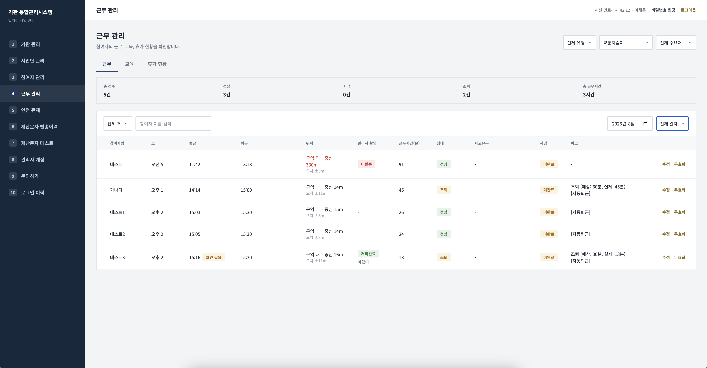
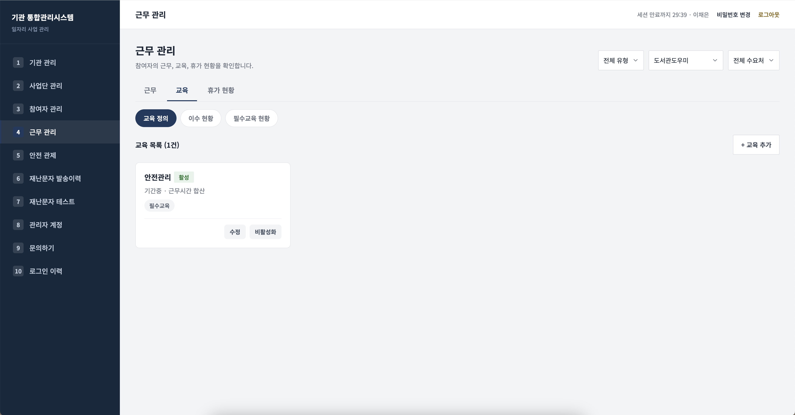
교육날짜를 입력하면 전체 조 중 이 날짜가 근무일인 조가 몇 개인지, 근무일이 아닌 조는 어디인지 보여주는데, 등록을 막지는 않습니다.
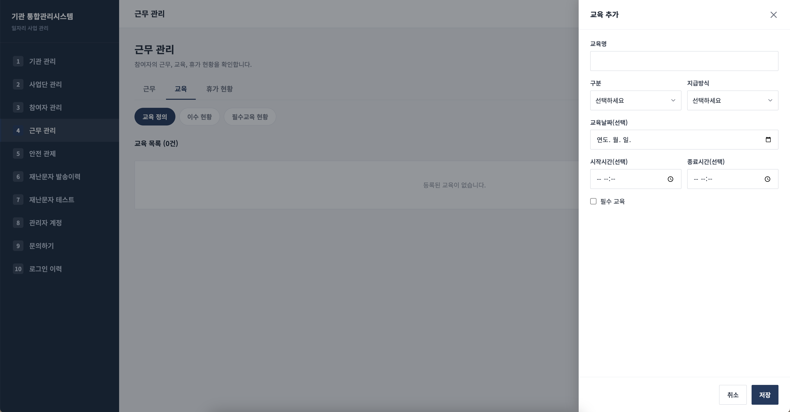
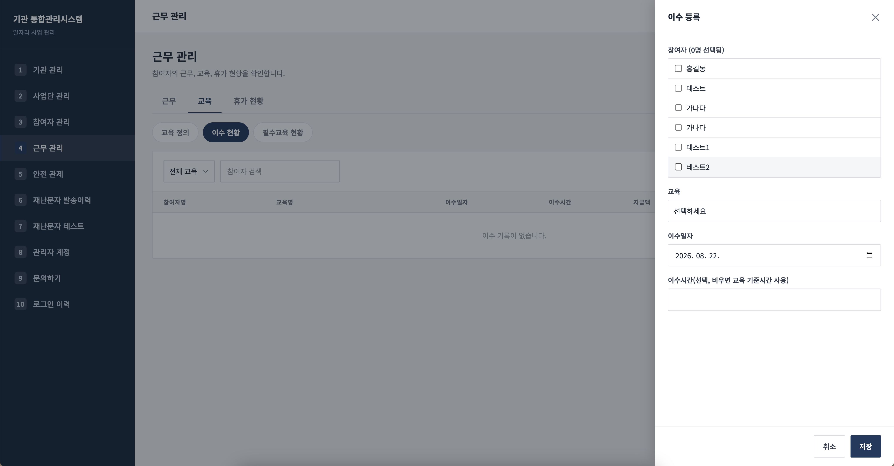
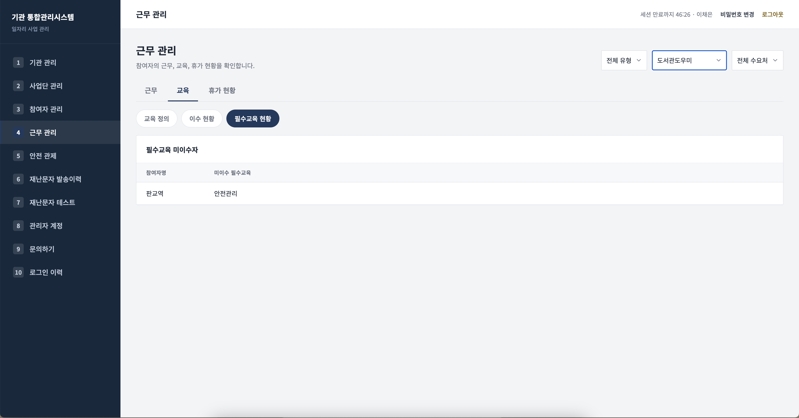
이 화면에서는 연차를 부여할 수 없습니다. 참여자의 연간 총 연차 일수는 사업단 상세의 참여자 목록의 연차 설정 클릭하여 연도별로 지정합니다.
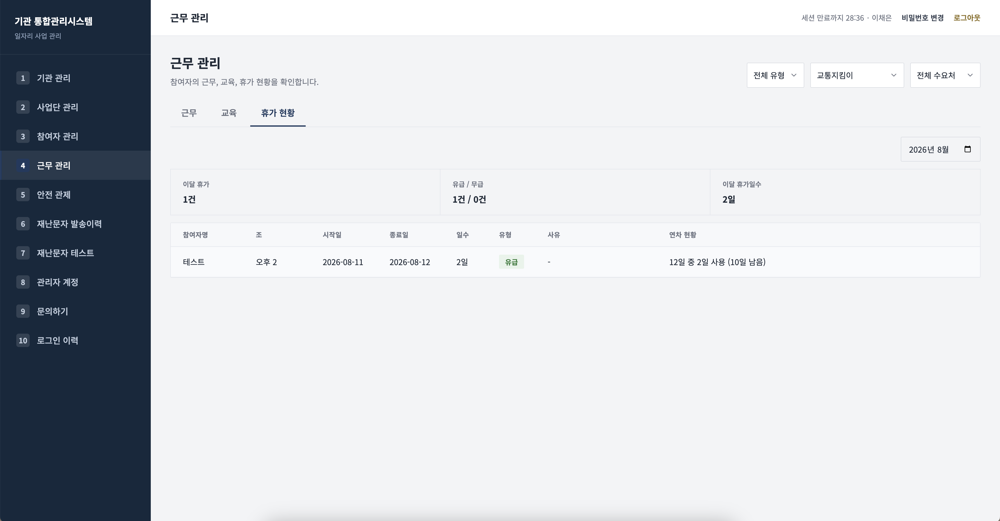
안전 관제
-
1
조회할 사업단을 선택하면 근무 구역(점선 경계)과 참여자 위치가 지도에 표시됩니다.
-
2
이탈 정도에 따라 정상(초록) → 1단계 → 2단계 → 3단계(빨강) 순으로 표시됩니다.
-
3
오른쪽 패널에서 감지 시각·참여자명·이탈 거리·단계를 확인합니다. 확인 필요/처리 완료 필터로 좁혀볼 수 있고, 3단계 항목은 배경색으로 강조 표시됩니다. 확인 처리 버튼을 누르면 메모(선택)를 남기고 처리 완료로 바꿀 수 있습니다.
참여자가 SOS(화면 두드림)로 도움을 요청하면 이 화면에 🚨 SOS 발생 팝업이 뜹니다. 참여자·수요처·발생 시각·이탈 여부를 보여주며, 확인 완료로 처리합니다.
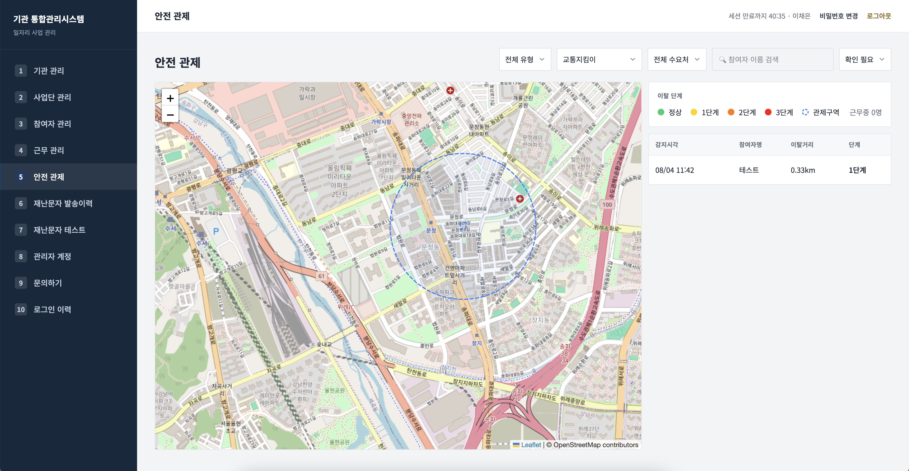
재난문자 발송이력
발송 시각, 지역, 종류, 내용, 대상 인원, 성공/실패 여부를 조회합니다. 별도로 조작할 항목은 없고,
발송이 잘 되고 있는지 확인하는 용도로 사용합니다.
근무지역·근무시간 조건에 해당하는 재난문자만 발송됩니다.
참여자가 근무 시간에 출근하지 않더라도 재난문자는 발송됩니다.
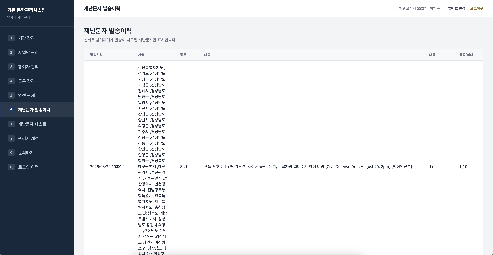
관리자 계정
| 역할 | 권한 |
|---|---|
| 기관 관리자 | 소속 기관의 모든 관리자 계정 발급 및 관리 |
| 담당자 / 부관리자 | 배정된 사업단 범위 내 업무 처리. 담당자 교체 시 담당 이관으로 맡은 사업단을 다른 계정에 넘길 수 있습니다. |
-
1
오른쪽 위 + 관리자 계정 발급 → 이메일(로그인 계정), 임시 비밀번호(8자 이상), 소속 기관, 역할, 이름을 입력합니다.
-
2
발급된 임시 비밀번호는 담당자에게 직접 전달하세요. 담당자는 로그인 후 비밀번호 변경으로 바꿀 수 있습니다.
-
3
퇴사 시 비활성화하여 계정을 정리합니다.
- 비활성화하기 전에 해당 담당자가 담당한 사업단을 다른 담당자에게 이관해야 합니다. -
4
사업단을 이관할 때에는, 담당 이관 버튼을 눌러 진행합니다.
사업단은 한 사람에게 또는 여러 담당자에게 나눠서 이관할 수 있지만,
맡고 있던 사업단 전부를 빠짐없이 배정해야 합니다.
- 담당 사업단이 하나라도 남아 있으면 계정을 비활성화할 수 없으니, 반드시 이관을 먼저 진행해야 합니다.
이관하면 그
사업단에 속한 수요처의 담당자 표시도 함께 자동으로 바뀝니다. 수요처 담당자 변경은 선택 사항입니다.


문의하기
화면 왼쪽 메뉴 맨 아래 문의하기에서 담당 이메일로 바로 연락할 수 있습니다. 오류가 발생했다면 화면 캡처를 함께 보내주시면 원인 확인이 훨씬 빨라집니다.